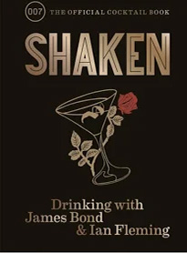

Boganbefalinger

The Oxford Companion to Spirits and Cocktails

The Drunken Botanist

Shaken

Tequila Mockingbird

The Joy of Mixology
Gode Råd
- Hvis du drikker, så kun i fritiden
- Find balancen mellem bar og privatliv
- Invester i dig selv med faglitteratur
- Tag relevante bartenderskurser
- Lær af de bedste barer i verden
- Opbyg netværk i branchen
- Prioritér restitution og mental sundhed
- Skab dit personlige brand som bartender
- Eksperimentér med smagsprofiler
- Forstå og imødekom dine gæsters behov
- Hold styr på økonomien bag baren
- Coach nye bartendere og del din viden
- Udnyt teknologi til at forbedre servicen
- Arbejd smart: tidseffektivitet bag baren
- Sæt mål for din bartendervækst